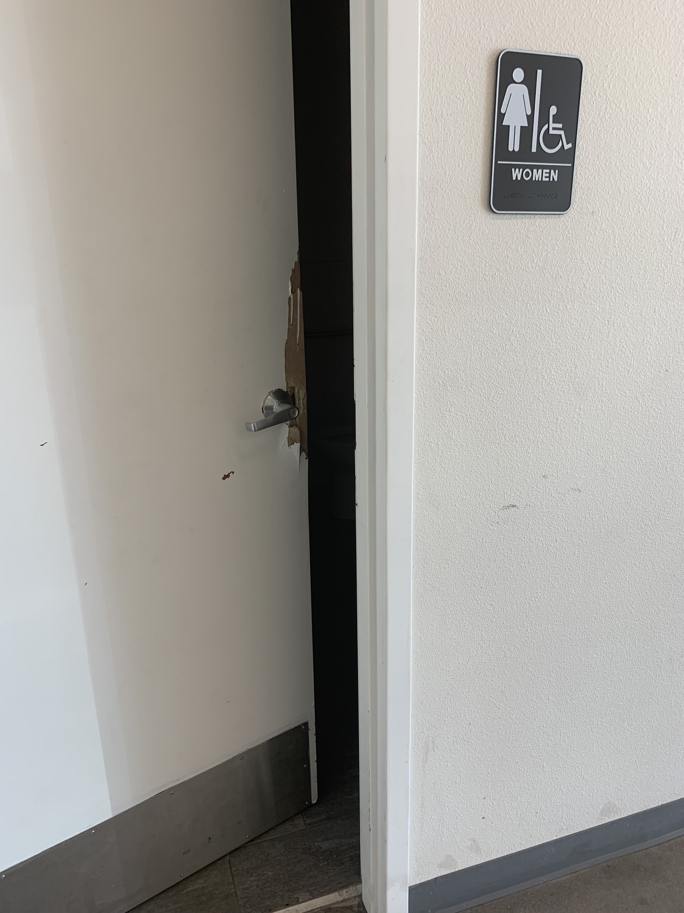
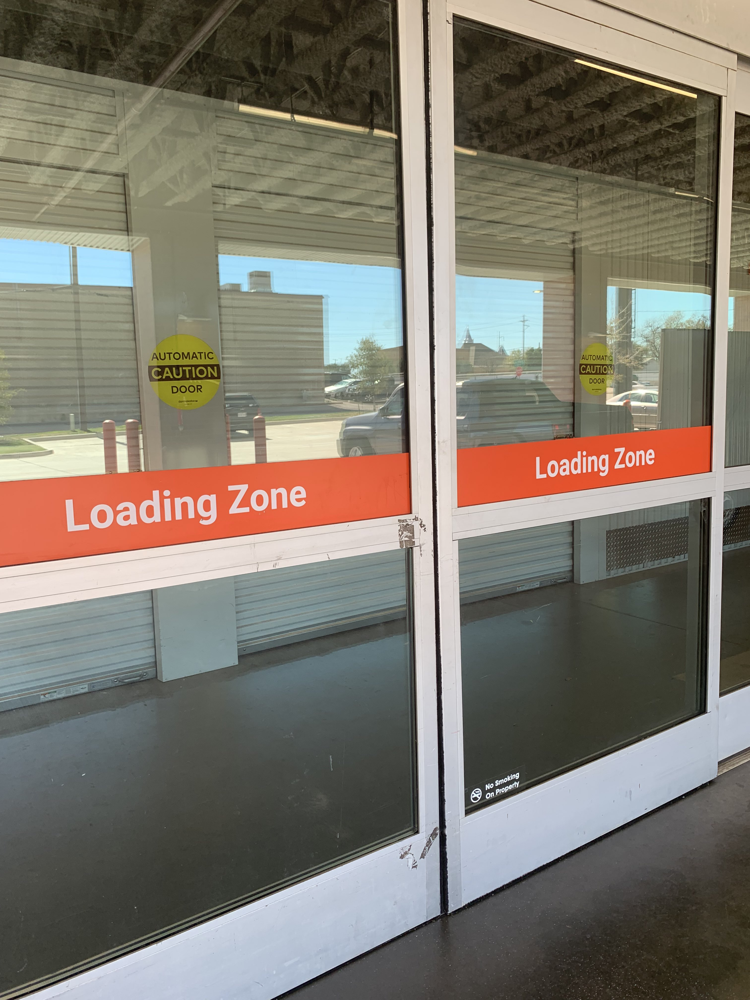
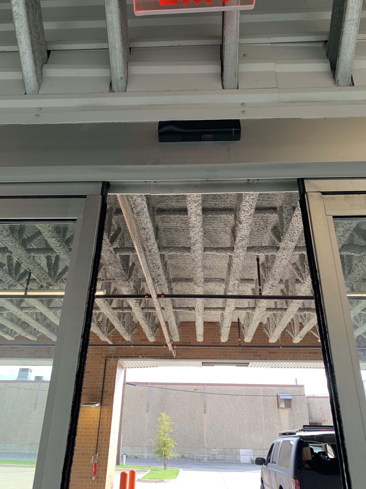
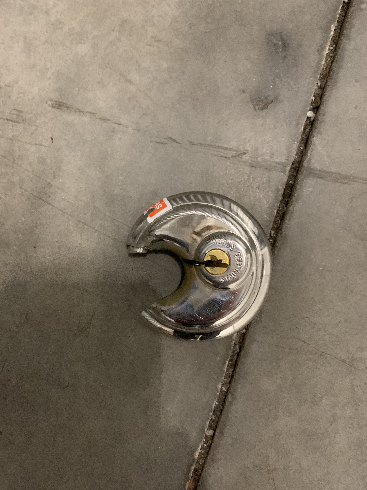
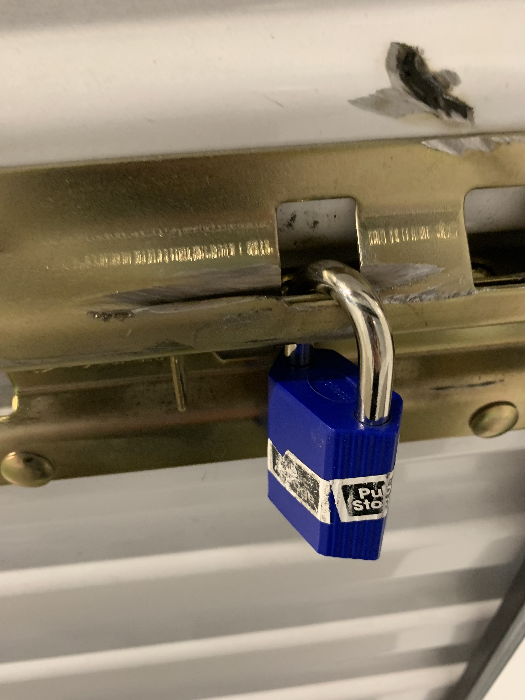

The Public Storage facility at 625 Stella Street in Fort Worth is unsafe.
If you are looking for storage in the Fort Worth area, it's likely that you've seen the facility on 625 Stella Street. It's one of the largest facilities in the area, and it's flooded online with overwhelmingly positive reviews. I urge you not to blindly believe these reviews. Comb through them carefully.
This location is possibly the most unsafe storage facility in the area. Going through the facility's reviews, you may notice that many of the negative experiences mention the poor condition of the facility and how often it is burglarized.
Although there have been more than a dozen reported burglaries at this facility in 2023 alone, and probably many more that go unreported, I would like to narrowly focus on one story that was published by the Fort Worth Star-Telegram, covering incidents that affected former customers Angela and Craig.
A wide shot of the Public Storage facility at 625 Stella Street, taken by Matt LeClercq of the Fort Worth Star-Telegram.
Questionable reviews
It is very common for storage companies to incentivize their locations to collect positive reviews. I have personally been solicited to leave a positive review after having an exchange with an employee at a different Public Storage location.
The reviews on PublicStorage.com are pulled from each facility's Google Reviews page. You will notice that many of the positive reviews are very broad and vague, and they often mention staff by name. This may be indicative of review incentives. These reviews often seem very unnatural, sometimes complimenting irrelevant things such as an employee's voice. These reviews flood out the negative ones, which are very much more detailed and read completely differently.
For these reasons, I urge you to question the reviews for Public Storage's facilities. For this particular 625 Stella Street location, there are mentions of rampant burglaries, the facility being a mess, and even people camping out inside of its storage units. These reviews are flooded out by others in the shallow nature of, "Billy was so fantastic! He has a great smile!"
Alleged 24/7 security
The facility in Fort Worth at 625 Stella Street does not have 24/7 security. An employee at the facility has lied and claimed that it does on at least one occasion.
The definition of security is "the quality or state of being secure," such as "freedom from danger." Examples of proper security are monitored cameras, alarms, etc. This facility only has cameras. Cameras do nothing to protect the customer. They exist to serve the facility and benefit their legal liabilities. According to the Property Manager (Bryant, at the time), some halls of this location are completely blind to cameras.
This facility is not secure. Continue reading and you'll quickly see why.
Misleading crime statistics
When a burglary occurs at a Public Storage facility, there is no policy requiring staff on location to report it (according to the District Manager of the 625 Stella Street facility, Troy Galer). It is left up to the customer to report the burglary, even if the facility exhibits signs of a forced entry.
Why do you think that is? Why would a Public Storage location want to report a crime at their facility? It does not benefit them. It isn't great advertisement. They've already got you to sign their rental agreement and insurance policy agreement—as far as they're concerned, whatever happens to your storage unit and belongings from that point forward is for you to deal with.
If you look up the reported burglaries at a Public Storage address, the number you'll find is the absolute bare minimum that would have happened at the location. There is a very good chance that many burglaries at Public Storage facilities go unreported. The Fort Worth Star-Telegram article states that "Fort Worth police have responded to Public Storage on Stella Street for break-in calls 13 times so far this year, according to police records," but I would be willing to bet that the real number is higher than 15. Keep in mind that these are burglary incidents being reported, not the number of individual units burglarized—a single burglary can affect hundreds of customers.
Disrepair and safety concerns
There are several areas of this facility which appear to be falling into a state of disrepair.
A damaged door to the women's bathroom, taken on October 16, 2023. The door cannot be closed due to its condition.
Reviewers from as recently as July 2023 state that the halls of the third floor in this facility are difficult to walk through. One in particular, Bryan, alleges that there were "campers in his aisle," which seems to imply that there are people illegally living in units at the facility. This is a major safety risk and is against practically every competent storage company's policies.
Faulty doors and motion sensor
Has your storage unit been burglarized at the Public Storage facility on 625 Stella Street? Did you see no signs of forced entry? Are you curious why? If your case is anything like that of Angela and Craig, it's probably because the doors and motion sensor are faulty and open themselves for criminals.
These doors are the only barrier between the parking area and this facility's indoor storage units.
Angela and Craig were confused at how the facility was left without much damage other than to their storage unit door's latch. This had originally led them to believe that staff at this location were involved in some sort of inside job. When asking to see the camera footage of the first burglary that affected her unit, Angela was told that it was against Public Storage policy to do such a thing.
After their storage unit was burglarized for a second time (less than 48 hours later), the Property Manager (Bryant) suddenly allowed Angela (accompanied by the Fort Worth Police) to view the camera footage. In this footage, an officer of the Fort Worth Police was able to confirm that the burglars entered the facility the same way during both incidents—by sticking a wire hanger through the doors to trigger the motion sensor on the inside of the doors, thus causing the doors to open.
This motion sensor has been exploited during at least two burglaries at the Public Storage location on 625 Stella Street.
At bare minimum, this facility was broken into twice in this same way. This could have happened dozens of times by now, and for it to happen at all is a clear sign of negligence. What is the Property Manager doing all day if not discovering and addressing these issues? Customers are not being made aware of such incompetence when they sign their rental agreement or insurance policy agreement. With access to footage from previous burglaries, it's just not possible for staff at this location to be unaware of the faultiness of this facility's doors and motion sensor. There is no excuse.
Customer-last service
It's important to understand that Public Storage staff are not on the customer's side. They exist to minimize the company's liabilities and place blame on the customer. It's very likely that most on-location staff will be replaced by automated system or robotics in the future. Some locations are already completely unmanned.
Once you have've your rental agreement, customer service practically ends. If anything happens at the facility, staff will attempt to use the rental agreement as a catch-all to fully exonerate Public Storage. Their job is not to protect your belongings. Their job is to get you to sign a rental agreement and pay on time. From that point on, you're on your own.
For the first burglary that affected her, the 625 Stella Street facility's Property Manager (Bryant) called Angela at around 2pm CDT to inform her that her locks were cut off of her unit. Access to the property opens at 6am CDT, and the property office opens at 9:30pm CDT. What is a Property Manager doing for the first near-five hours of their work day, on a Monday, if not surveying the property to ensure that the facility was not compromised overnight?
One of two locks that Angela had on her storage unit, which were cut by burglars. This one was provided by Public Storage.
After their shared storage unit was burglarized for a second time in 48 hours, Craig contacted the District Manager, Troy, about the situation. Troy appeared unaware of what was happening at the 625 Stella Street facility and offered to call him back.
After a few minutes, Craig received a call back. Instead of offering solutions and an explanation of how his facility could be breached the same way, twice in 48 hours, due to the poor design of their doors and motion sensor, Troy reminded Craig that he had signed a rental agreement (which was signed under the promise of a 24/7-secured facility). Troy then insisted that the 625 Stella Street facility was victimized just as much as its customers because the doors of the burglarized storage units would need repairs.
When asked any difficult questions about the situation, Troy would respond with something to the like of, "Er, wh—, no—," before finally managing, "I don't believe this is a productive conversation."
How Angela found the latch of her storage unit after the first burglary. Damage appears to be from an angle grinder.
To again quote the Fort Worth Star-Telegram, "The Star-Telegram’s repeated attempts to speak with someone at Public Storage were unsuccessful this week. Employees at the Stella Street location said they could not comment and referred a reporter to a company lawyer, who did not immediately respond to messages. A district manager also did not respond to a request for comment." They are not on your side. They do not care about your customer experience.